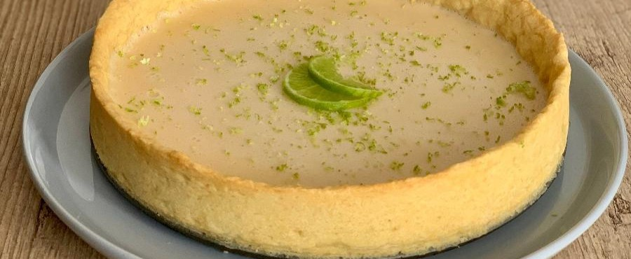

TORTA DE LIMÃO

Torta de limão sobre a mesa.
Ingredientes:
- 200g de biscoito maisena
- 150g de margarina
- 1 lata de leite condensado
- 1 caixa de creme de leite
- suco de 4 limões
- raspas de 2 limões
- 3 ou 4 claras de ovos
- 3 colheres de sopa de açucar
- Raspas de 2 limões para de corar
Modo de preparo
- Triture o biscoito de maisena em um liquidificador.
- Junte a margarina e bata mais um pouco.
- Despeje a massa em uma forma de fundo removível(27cm de diâmetro).
- Com as mãos, espalhe os biscoitos triturados no fundo e nas laterais da forma, cobrindo toda área de
maneira uniforme.
- Leve ao forno médio (180 C), preaquecido, por aproximadamente 10 minutos.
- Bata todos os ingredientes no liquidificador (exceto pelas raspas) até obter um creme liso e firme.
- Recheie a massa já assada e leve à geladeira por 30 minutos.
- Bata as claras em neve e acrescente açúcar.
- Misture até obter um ponto de suspiro e leve ao forno até dourar.
- Desenforme a torta (sem retirar o fundo falso), despeje a cobertura e acrescente as raspas de limão.
Informações adicionais
Você pode servir esta receita como sobremesa.